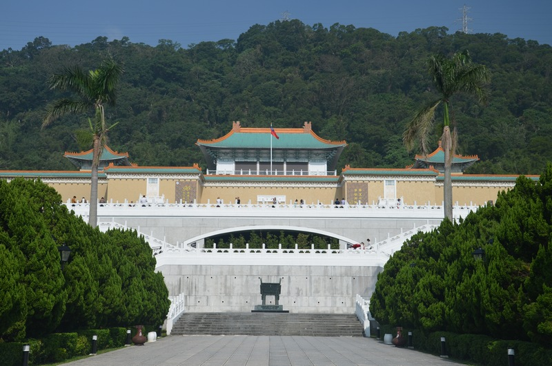
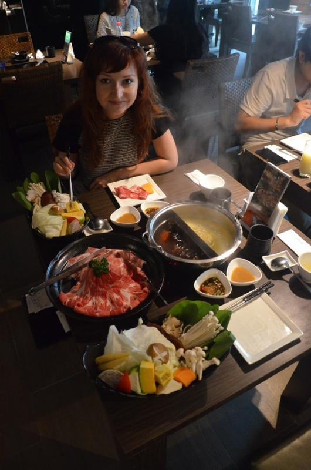
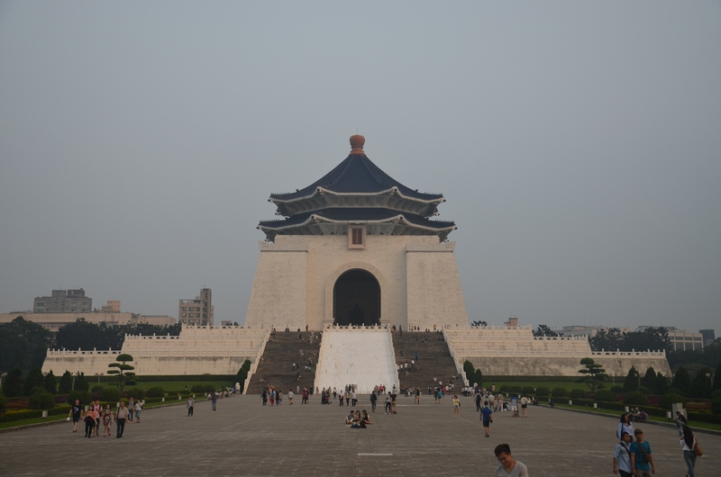
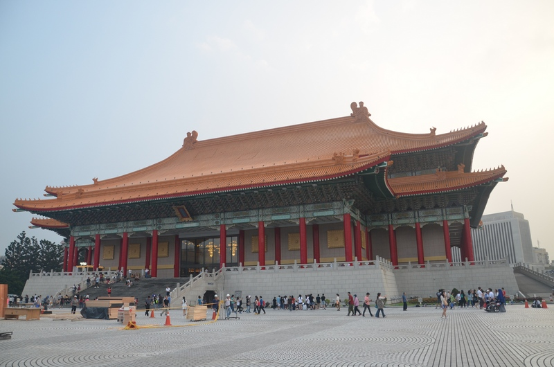
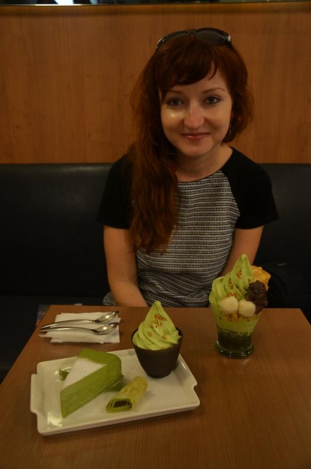
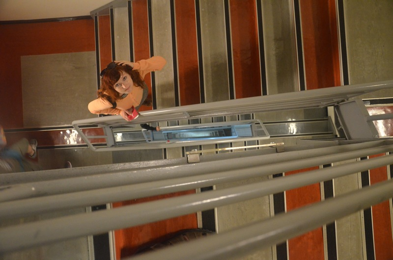
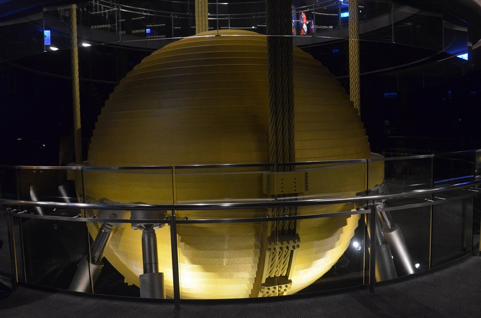

Na neděli jsme si naplánovali prohlídku Národního palácového muzea, které ukrývá naprosto unikátní sbírku čínského umění. Najdete zde poklady malířství, kaligrafie, sochařství, keramiku či náboženské předměty, v řadě případů velice staré - některé dokonce až z neolitu! Sbírka je natolik rozsáhlá, že vystavované předměty se často střídají. Stálé místo zde mají pouze ty nejzajímavější exponáty, jako např. slavné nefritové zelí. V muzeu se nesmí fotografovat a nepustí vás tam ani s batohem - ten si musíte odložit do skříňky.

Národní palácové muzeum
V muzeu jsme strávili celé dopoledne, pak už nás vyhnal hlad - jak typické :-) Vydali jsme se tedy do japonské restaurace, kterou nám doporučil Julien, přítel Mendy. Jedná se o restauraci, která se specializuje na pokrmy ve stylu “hot pot”, což v praxi znamená, že každý stoleček tu má svou vlastní plotýnku, ve které se vaří hrnec s vývarem a v něm si hosté sami připravují objednané jídlo, které je… ano, syrové. Takže než Péťa vygůglil, co to ten hot pot vlastně znamená, už jsem měla polovinu ovoce a zeleniny snědenou a hladově jsem se vrhala i na plátky syrového masa, které vypadaly jako sušená šunka :D. Naštěstí včas zakročil sympatický pár u vedlejšího stolu, který už se na náš amaterismus asi nemohl koukat a ochotně nám začali vysvětlovat, jak hot pot vlastně funguje a jak dlouho máme jednotlivé položky ve vývaru vařit, případně co se kombinuje s jakou omáčkou. Po tomto úvodním trapasu už jsme tedy zhruba věděli co a jak a mohli jsme si vychutnat vynikající vývar spolu s dalšími ingrediencemi. Co mi ale jednoznačně chutnalo víc než celý hotpot, bylo osvěžující mangové smoothie, které jsme si objednali k jídlu - nikdy jsem nic tak dobrého nepila!

Hot pot amatéři :D
Po obědě jsme pokračovali k Čankajškově pamětní síni. Tento grandiózní památník je dokonalým příkladem palácového stylu a k jeho hlavní síni musíte vystoupat po 88 schodech, které reprezentují věk, v němž tento autoritářský vůdce zemřel.

Čankajškův památník
Každou hodinu zde probíhá střídání stráže, které je zajímavou podívanou. Uvnitř památníku se pak nachází expozice věnovaná Čankajškovi. Z vrcholku památníku je krásný výhled na Náměstí svobody, Národní divadlo a koncertní síň.

Národní divadlo
Další kulturu jsme se rovněž rozhodli proložit gastronomií, a tak jsme se vydali do kavárny, která se specializuje na pokrmy z čaje matcha. Výroba tohoto čaje je prý jednou z nejnáročnějších metod produkce čajů na světě. Čtyři týdny před sklizní se pole, kde se čaj pěstuje, úplně zastíní. Rostlina, která je v té chvíli téměř v úplné tmě, kompenzuje nedostatek světla intenzivní produkcí chlorofylu. To činí listy bohatší na aminokyseliny a typická je pro ně smaragdově zelená barva. Z prášku matcha se pak vyrábí různé dezerty, pudingy nebo třeba zmrzlina, která je skutečně vynikající. Ochutnali jsme hned několik dobrot a všechny byly moc dobré. Jediné, co mi na asijských dezertech přijde šílené, je záliba místních přidávat do všeho želatinu a podobné měkké věci (viz bubble tea) nebo… červené fazole. Ano, čtete správně, luštěnina v kombinaci se sladkým, je fakt zlo. Matcha samotná je ale vynikající a můžete se s ní setkat i v českých čajovnách.

Matcha!
Po občerstvení jsme pokračovali znovu k budově Taipei 101, tentokrát s cílem podívat se až nahoru do 89. patra, kde je vyhlídková plošina. Nahoru jsme se nechali vyvézt unikátním tlakem řízeným výtahem. Ten jede rychlostí 1010 m/min a cesta z přízemí tak trvá pouhých 40 sekund! Je to naprosto neuvěřitelná rychlost - mně během té chvilky docela zalehly uši jako v letadle.

Schody do nekonečna…
Teprve při pohledu z vyhlídky jsem si uvědomila, jak je Taipei 101 vysoký. Bostonská Prudential Tower se svými 228 metry by vedle něj vypadala trapně malinká. A na rozdíl od Prudential Tower mi pohled z 101 nedělal úplně dobře :D. Přesto jsme se odvážili vylézt ještě o 2 patra výš, kde se nachází venkovní plošina. Z důvodu obrovského smogu jsme ale stejně neviděli o moc víc, než co nám nabízela prosklená vyhlídka v 89. patře. Vydali jsme se tedy raději prozkoumat obrovskou zatěžovací kouli zavěšenou na mohutných lanech, která zajišťuje stabilitu budovy při zemětřeseních.

Zatěžovací koule
Musím podotknout, že se nám velmi osvědčilo vyrazit na vyhlídku až cca hodinu před zavíračkou. Stihli jsme si všechno v klidu prohlídnout, ale hlavně už tam nebyli skoro žádní turisti, což bylo skvělé. Po tomto zážitku už nás čekala jen cesta zpátky do našeho bytečku a čerpání síly na následující den. Než jsme se nadáli, byl před námi náš poslední den v Taipei. Jak jsme ho strávili se dozvíte v příštím článku :-)